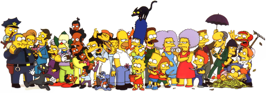

We don't usually find memorable laughs in live-action spectator entertainment. But we often do find memorable laughs in animated spectator entertainment.
For instance:
Most of the characters in The Simpsons have distinctive laughs. If we’re familiar with the show, we can recall how most of the cast laughs:
(and so on)
By contrast, we can take any of our favorite live action shows and see how many consistent cast laughs we remember.
Characters in animated spectator entertainment sound like they're laughing. But they're actually just noises superimposed over cartoon animations. The actors make these noises in a recording booth don’t look or sound as if they were laughing.
We interpret the repetitive noises the voice actor is making for Professor Frink as laughter—but they're just repetitive random noises! We can see this for ourselves by imitating Frink's laughter.
In fact, we can try making almost any kind of repetitive noise. By imagining that noise superimposed over an animated character laughing, we can see how it would be interpreted by an audience as a laugh—even though it's actually just a random repetitive noise!
Voice actors in animated shows have a lot of leeway to create distinctive laughs. They don't need to convincingly act out humor tells for a camera—they can focus on making sounds without worrying about how they look!
This is one of the reasons we can remember distinctive laugh-like noises for many animated characters, but not live-action characters.
Since characters in animated comedies have distinctive laughter, we tend to think of them as emotionally responsive and relatable. This contrasts with sitcom characters, where the infrequent and often lackluster laughter often makes the characters feel flat.